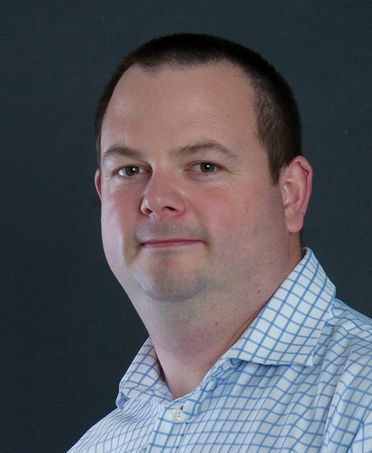

Jiří Matyáš
koordinátor FIS v Českém florbalu
Pro lidi z florbalového prostředí, kteří si chtějí ověřit, s kým mají tu čest.
Starám se o Florbalový informační systém, aby spolehlivě sloužil klubům, trenérům, rozhodčím i celému spolku.
Otevřít můj LinkedInO mně
Jsem rád součástí systému a rád systém poznávám od základů až po vrchol. Součástí systému jsou lidé a bez lidí by to nešlo. Každý člen systému by měl být správně motivovaný.
Když jsem seděl v dodávce, snažil jsem se pochopit svět logistiky. Když jsem pracoval v oblasti obchodního práva, bylo třeba nastudovat zákony a najít nejideálnější a nejefektivnější řešení.
Celým životem mě provází komunikace a té já se nebojím.
Co dělám
-
Správa, provoz a rozvoj FIS
Starám se o každodenní chod Florbalového informačního systému a plánuji jeho další rozvoj.
-
Od požadavku k zadání
Požadavky uživatelů převádím do strukturovaných zadání, se kterými může vývoj rovnou pracovat.
-
Vývoj, testování a nasazení
Koordinuji vývoj, testování a nasazení změn, aby nové funkce přišly včas a bez zbytečných výpadků.
-
Partneři a stabilita systému
Spolupracuji s technologickými partnery a dohlížím na stabilitu celého systému.
Zkušenosti
-
od 10/2026
Koordinátor FIS
Český florbal
Správa, provoz a rozvoj Florbalového informačního systému. Propojuji potřeby uživatelů, provozní procesy a technické možnosti systému.
-
4/2019 – 9/2026
Koordinátor / manažer regionu Vysočina a Jihočeský kraj
Český florbal
Řízení regionálních soutěží a rozhodčích, rozvoj klubů, vzdělávání a spolupráce s regionálními partnery.
-
od 12/2017
Organizace sportovních aktivit a eventů
OSVČ
Florbalové akce a vodní turistika.
-
Starší pozice 2003–2017
- 7/2015 – 11/2017 Řidič, nákladní a osobní doprava v EU Petr Liška
- 9/2008 – 1/2015 Konzultant obchodního práva EUROCOMPANIES a.s.
- 1/2007 – 12/2007 Řidič, ambulantní prodejce Crocodille
- 7/2006 – 1/2007 IT Project Manager projekt BENEPOINT
- 11/2003 – 3/2006 Vedoucí aktivací, TP a servisu domácností NETBOX SMART Comp. a.s.
Licence a certifikace
- Úvod do safeguardingu E-learning, Trénujeme s respektem, 2026
- ESG certifikovaný kurz Změna k lepšímu, z. s., 2025
- Automatizace v Microsoft Power Automate Digiskills, 2024
- Digiskills 365 Heroes Digiskills, 2021
- Zdravotník zotavovacích akcí ZDrSEM – první pomoc zážitkem, 2018
- Trenér florbalu – licence B Český florbal, 2013
- Vodní turistika a záchrana na divoké vodě Univerzita Karlova, 2011
Kontakt
Nejrychleji mě zastihneš na LinkedInu. Pokud jde o FIS nebo spolupráci, klidně napiš i e-mail.